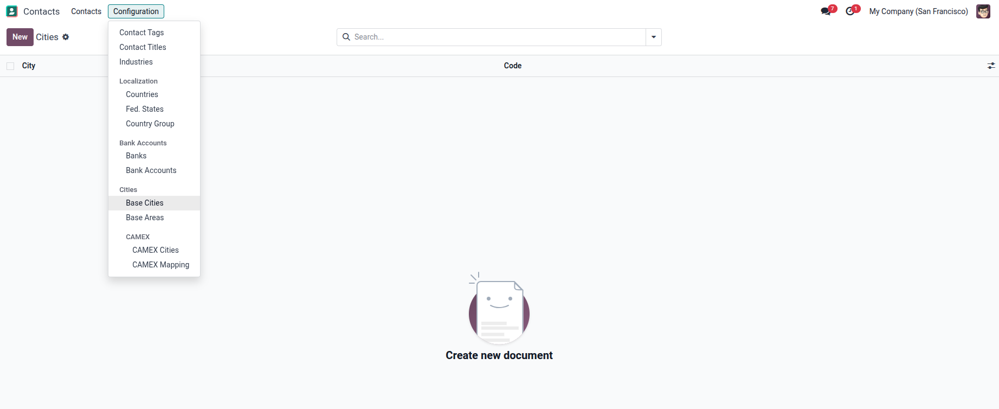
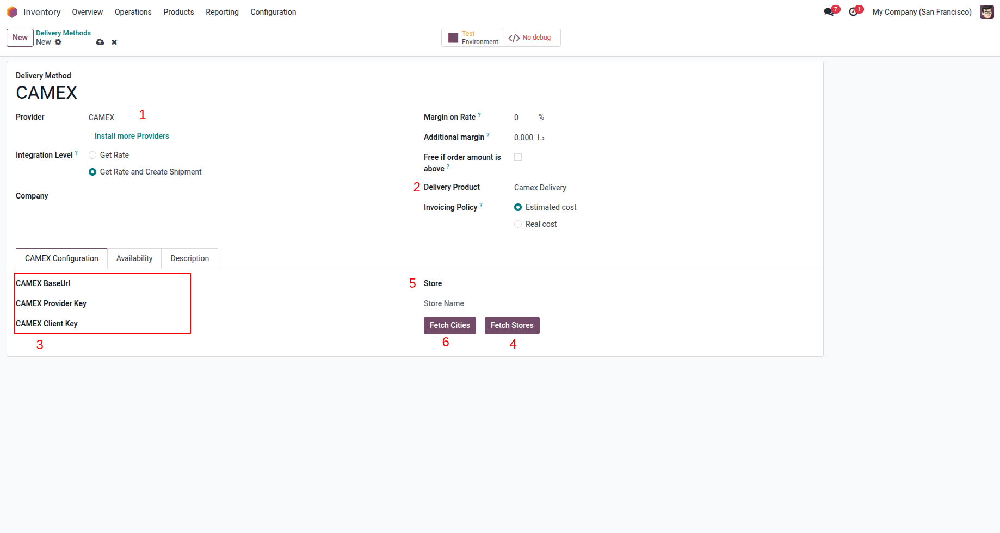
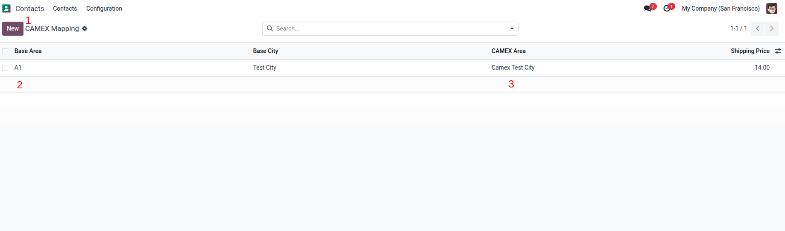
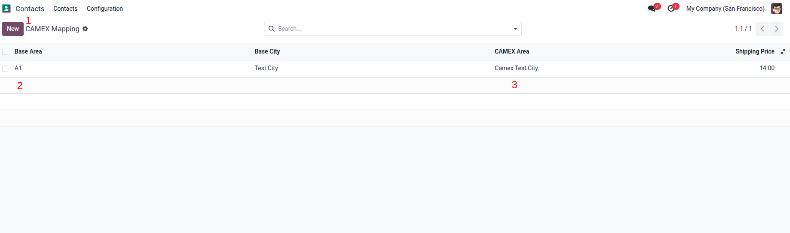

ğŸ› ï¸ How to Configure
- To define your cities and areas, go to Contacts → Configuration, then set up your own Base Cities and Base Areas.

Create a new Delivery Method, select the provider "CAMEX", then fill in the fields in the order shown in the image.


 
